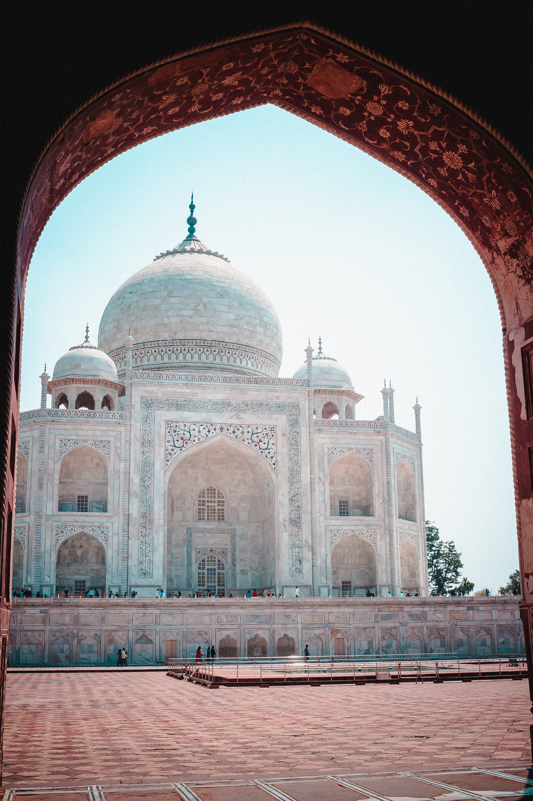
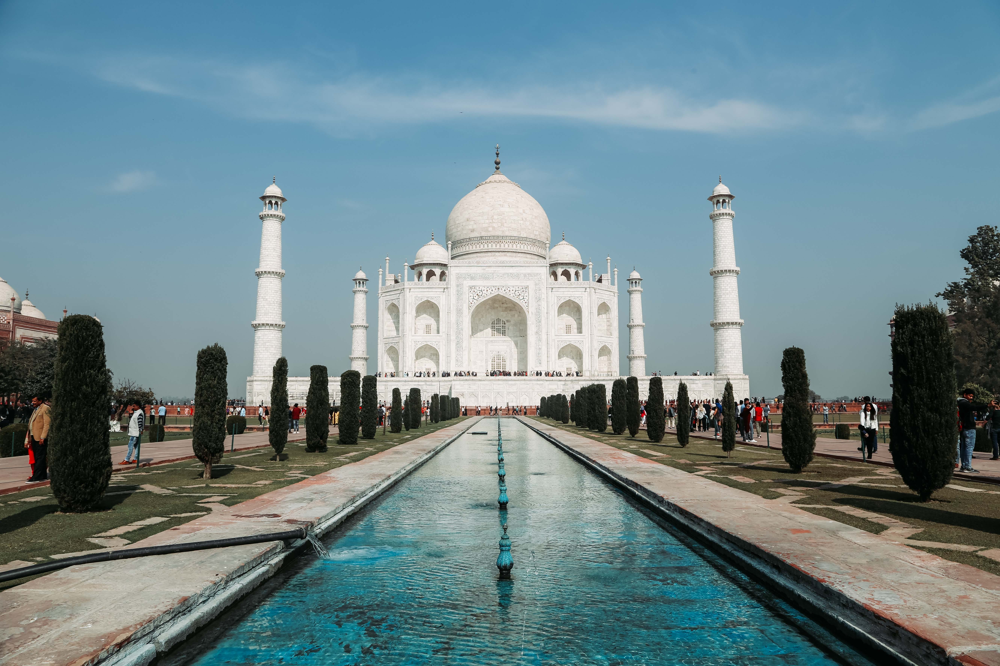

TAJ MAHALLA
Ne vitin 1612,Princi Khurram mori gruan e tij te bukur Mahal.
Princi kishte nje numer te madh te grave,por me e bukura ishte Mahali,dhe ajo i besonte plotesisht.
Kur Mahali lindi femijen e 14-te,ajo vdiq.Princi ishte shum i trishtuar .
Ai mbajti zi per dy vjet dhe u zotua te ndertoje nje gur varri
per gruan e tij,me te cilin asgje ne bote nuk do te mund te krahasohej.Vargje te Kur'anit te shenjte shtrihen ne pjese te ndryshme
te mauzoleut.Shum arkitekte e inxhinier u mbledhen nga e gjithe bota per ta ndertuar

